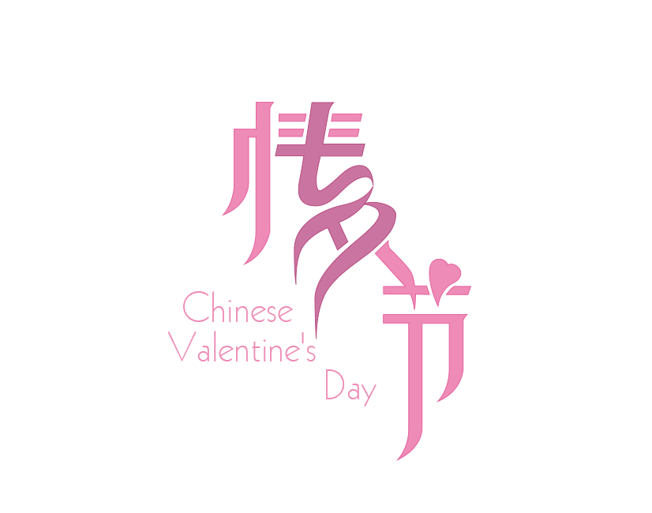
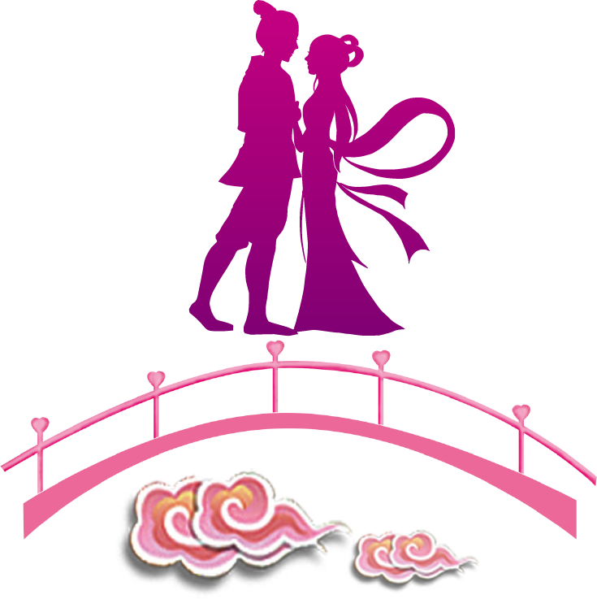
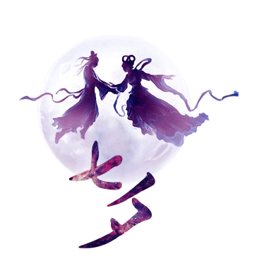

感动中的留情，短信中的深情
- - 请阅读到底部6秒钟后有惊喜奥
ML，你还记得我们第一年相遇,那些写过的纸条吗?还记着一起旅游时那些甜甜蜜蜜的照片吗?最近一个多月，一直在思考，在回忆，在整理过去这几年跟你面对的这一切。慢慢才发现原来我们经历了这么多的事，像万里长征,一步步的走来，崎岖坎坷，但拥有时又感觉心里暖暖的,满满的都是幸福,本来打算跟你过第一个七夕情人节,但是今年好像又过不了。但我可以在这个节日来临之际，为你许下诺言，我们一起去遵守那个约定。
截止写这封信的时候，我已经发了五十八篇与你有关的文章了，但是你不知道，也看不到。
7月11日，我发了第一篇，那个时候我的压力太大了，已经很难去支撑心理底线了，所以从那个时候开始决定写文章，用文字来记录过去发生的事，用文字来记录我的思想。
今天是8月11日，正好一个月了，这一个月也沉淀了很多东西
在最开始几天，我的梦里总是出现你的身影，但是我总是梦到我追不上你，由于各种原因，你总是比我快一步或者比我高一点，我不知道怎么才能追上你
后来梦境就变得很复杂，各种各样的事都能梦到，但每天的梦都有你的身影，这一个月的梦里，我没有一次在最后是跟你好好在一起的，总是梦到你出事，或者你不要我了，或者你有男朋友了。每次梦到这的时候都能被吓醒。
也就是从这之后，我开始害怕一个人睡觉，每天晚上总能被吓醒，总感觉旁边有人，后来我就只能打开灯睡觉了
时隔n年，我第一次端起酒杯，坚持了多年的滴酒不沾，在这一个月打破了多次。但是喝完似乎也没有多大效果，只会起一个晚上的作用，看来常说的借酒消愁没啥用，而且，我现在更信那句，借酒消愁愁更愁。每次在喝完酒，头昏脑胀的时候总想给你发短信，但是也不是有那么大的勇气去给你发。我第二次喝的时候，大概有点多吧，给你发了短信，稀里糊涂的，但是没想到你还回我消息了，这对我来说是很出乎意料。可是你回我的是，照顾好自己，忘了你，可是这怎么忘得掉？你希望我好好生活，希望我不要因为你而受到影响，可是这很明显不现实啊，你说事情变成现在这个样子不是你想要的，可是，要是到你想要的样子，有多少人为你难过，我不希望你因为忘记我而受到痛苦，我当时跟你说了分手，可是我根本不能接受你发生这些事啊，我跟你说过，我不愿意你再受一点伤害，一点委屈。我一直期待跟你在约定到的那年，履行我们的承诺，我会一直等你的。
你在短信中给我说，曾经跟我有个孩子，可能从知道有ta的存在到失去ta，你的内心都是很煎熬的吧，当初你一个人去做手术的时候，你一定很孤单吧，那个时候我要是知道这件事，你让我去陪你，我肯定会去陪你啊。我当时要是不发脾气，要是对你好点，也许就不会发生这些事了吧。和你认识的这七年时间，你经历的痛苦是难以弥补，难以挽回的，你能承受这一切得有多大的勇气啊。
从高中到大学，你一直在包容我，一直在纵容我，对我是极度放纵，不管我想干啥，你都在第一时间满足我，竭尽全力满足，但是，我还那样对你，这一切是那么的不对等，那么的不平衡。你从来不说你经历了什么，但是，这些事发生之后，我突然意识到，你从始至终，所有发生不好的事，都是因我而起，这一切也许你永远不会告诉我吧，当意识到这一切到底是因为啥的时候，我确实对自己产生了怀疑。但是即使在这种情况下，你还是选择将我置之事外，你经历了这么多痛苦，你不想让我知道，想让我继续好好生活，可是并不能啊，我怎么能接受你发生这样的事呢？
我在这个网站发的第一篇帖子是我记录的跟你发生过的事，可能我知道的并不全面，当然也有一些地方了解的不是很清楚，但是，我想要说的意思是不变的，我要表达的我的想法是不变的。
也许以前的我从不谈未来，因为以前我觉得未来太过于渺茫，我也不知道三年后我会身处何方，我不知道未来会是个什么样子，所以，我从不谈未来，但是，经历过这些，也考虑到了很多东西，未来，也许没有那么遥不可及，对于那些缥缈虚幻的东西来说，守住身边的人才是最重要的。不管以后会面对什么，以后的生活会是什么样，守护住那个最值得守护的人，不让她再受一点儿伤害才是最值得的，那个人就是你。
我们曾经有过约定，现在已经第七个年头了，在约定到来之际，我们可以去实现我们的约定，信守我们的承诺
我们曾经的承诺
你若未嫁
我若未娶
我们结婚吧！！！